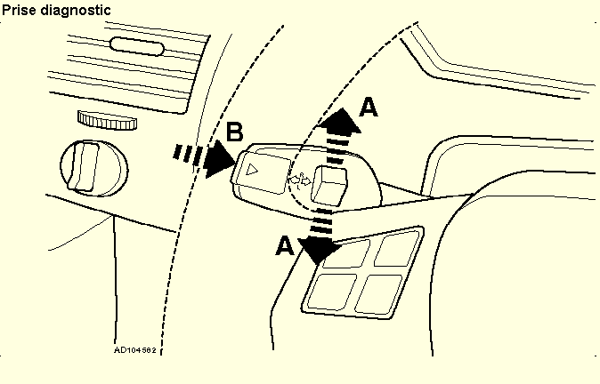
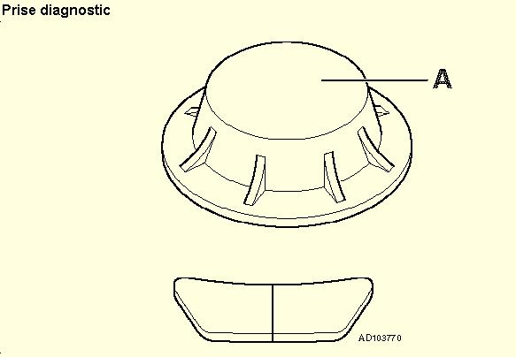
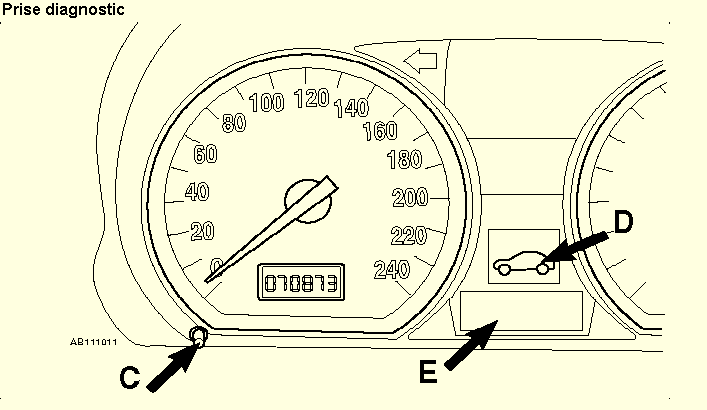

Accéder aux informations concernant la révision à l'aide du témoin de périodicité de révision
N.B. Ces instructions permettent l'identification des groupes d'opérations de révision supplémentaires (éléments) nécessitant une intervention. Consulter le guide d'entretien et de révision pour obtenir le détail des opérations à effectuer.
Accéder aux informations concernant la révision à l'aide du i-drive
Contenu spécifique pour l'accès via i-drive.
Réarmement des témoins de périodicité de révision
S'assurer que toutes les portes sont fermées.
Mettre le contact.
Exercer une légère pression vers le haut ou vers le bas sur le bouton [A] jusqu'à ce que le symbole [D] s'affiche et que les mots "SERVICE-INFO" (INFO REVISION) s'affichent sur le cadran du compteur kilométrique [E].
Appuyer sur le bouton [B].
Le premier symbole représentant le groupe d'opérations de révision supplémentaires (élément) apparaît et la date et la distance restant avant la prochaine révision apparaissent sur le cadran du compteur kilométrique.
Exercer une pression vers le haut sur le bouton [A] pour faire apparaître successivement chaque élément de révision.
Pour quitter le menu, couper le contact.